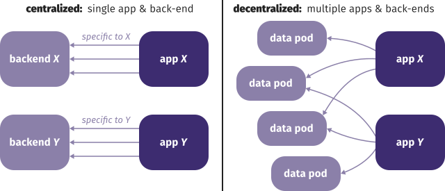

Tim Berners-Lee invented
the World Wide Web.
-
Here at CERN!
-
He drafted Information Management: A Proposal
- goal
- facilitating information sharing
- needs
- heterogeneity
- decentralization
- live links
- …
-
The first Web page came online in 1990.
- accessible from anywhere in the world
- any other page in the world can link to it (even today!)
The world before the Web
was highly heterogeneous.
-
Exchanging information was hard.
- different hardware
- different software
-
Innovation was hard.
- For which machines do we build?
- For which operating systems do we build?
The Web strives to be universal
through
independence of many factors.
-
Anyone can use the Web, regardless of:
- hardware
- desktop
- phone
- tablet
- watch
- …
- software
- operating system
- browser
- app
- …
-
Anyone is free to innovate.
- Build for the Web.
- Standards provide interoperability.
CERN decided to make the Web
available royalty-free in 1993.
![[Release of the WWW software]](images/www-release.jpg)
Communication evolved together
with the Web.
-
The Web is democratic.
- everyone can read information
- everyone can write information
-
Blogs emerged as a medium to spread thoughts.
-
The “Web 2.0” ideas made many users
transition from consumers to prosumers
as social media platforms take center stage.
Education evolved together
with the Web.
-
The free encyclopedia
Wikipedia started in 2001.
- freely accessible knowledge for all
- not always reliable though
-
Massive Open Online Courses soon followed.
Business evolved together
with the Web.
- Pizza Hut accepted online orders already in 1994.
- Amazon and many others exploit the long tail.
The Web brings freedom of expression
to everyone across the world.
-
Anyone can say anything about anything.
-
We all have our own spaces,
so we don’t have to agree.
-
We can link to opinions of others
to discuss about them.
The Web brings permissionless innovation
at a global scale.
-
Anyone can build anything for any reason.
-
The technologies are open.
-
You don’t need anyone’s permission
to join the Web and launch a new idea.
-
This contrast with app stores.
Permissionless innovation has brought
unprecedented creativity to the world.
What is the Web?
Web linking is decentralized, implemented
as one-way links embedded in documents.
-
essentials inside of HTML documents (not shared)
-
the rest outside of HTML documents (shareable)
- styling (fonts, colors, …)
- media (images, video, …)
- scripts
The Web a hypertext system
simple enough to scale to the world.
Individual links are allowed to break
so the entire Web does not.
Tim Berners-Lee
The Web’s universality
helped accelerate its growth.
-
HTTP and HTML were OS-independent.
- Yet the server and browser were NeXT-specific.
-
Support for other systems followed in 1992.
- Notably Mosaic
gave the Web a broader audience.
-
It provides compatibility at an unprecedented scale.
- The text-based browser Lynx is still developed and used.
- Your phone can access websites created 20 years ago.
Breaking Web universality
When websites are coded to browsers
rather than to standards,
users suffer.

Unfortunately, best viewed with
is back from never gone.

Native apps essentially undo
all progress on device-independence.
-
Before the Web, we needed specific software
to consume any kind of information.
-
Thanks to the Web, we only need a generic browser
to consume the world’s knowledge.
-
Once more, we need specific apps.
- Innovation becomes expensive and exclusive.
- Your browser works for you—an app not necessarily.
Centralization from multiple angles
is threatening the Web.
Technological decentralization can differ from practice:
-
browser vendors
- Only certain devices and software can access the Web.
-
search engines
- A few companies make or break websites.
-
platforms (especially social networks)
- You need a specific account to use the Web.
The current massive centralization
hurts diversity, innovation, and choice.
-
If you can integrate one service…
-
will it be facebook.com
or private-identity-provider.org?
-
Developers depend on centralized platforms
for data and identity.
- …or they have to become such a platform themselves.
-
People lose control of their data
and cannot easily switch to other apps.
- Innovation cannot attract locked-in customers.
Ironically, permissionless innovation
even allows platforms that prevent it.
The Facebook founder has no intention of
allowing anyone to build anything on his platform
that does not have his express approval.
Having profited mightily from the Web’s openness,
he has kicked away the ladder that elevated him
to his current eminence.
John Naughton, The Guardian
![[photo of a ladder]](images/ladder.jpg) © Vinayak Shankar Rao
© Vinayak Shankar Rao
How can we take back control?
Integration empowers the ecosystem
-
Your data does not need to be stuck
in a single ecosystem!
Decentralization empowers the user
-
Decentralization enables control
-
people can choose where they store their data
-
Mastodon lets you take your account with you
-
Decentralization enables trust
-
trust and censoring no longer reliant on single platform
-
users can migration to other platforms and services
decentralization is about choice
-
we will choose where we store our data
-
who we give access to which parts of that data
-
which services we want on top of it
-
and how we pay for those
Solid aims to restore choice
by separating data from apps.
-
Typical platforms nowadays store data
inseparably from an application.
- If we need to access the data, we cannot choose our app.
- If we need to use the app, we can’t choose our data source.
-
By separating data from apps,
we create independent choices.
-
In essence, we‘re taking Web apps back to desktop mode,
where one file can be opened by multiple apps.
Every piece of data created by a person
or about them, is stored in a data pod.

Apps and services appear similarly,
but they blend data from many sources.

A person can grant apps and people access
to very specific parts of their data.

Separating app and storage competition
creates better offerings for all parties.
By abandoning data harvesting,
we restore permissionless innovation.

Solid technologies
Solid is not a platform to replace others,
but a way of building for the Web.
-
Solid is an ecosystem.
- Standards enable interoperability.
-
Solid is a movement.
- We need to shift the app builder mindset.
-
Solid is a community.
-
Building Solid requires different people,
companies, and organisations.
A Solid server acts as a data pod
that stores and guards your data.
-
It is a regular Web server
- …with support for access control.
- …with support for Linked Data.
-
Its interface is application-agnostic.
- Build any application, like on the Web.
- Application-specific logic resides in clients.
-
A Solid pod is essentially a website with data.
- Its data is compatible with any Solid app.
A data pod can contain any data
you create or need online.
- profile üë§
- media üñº
- comments üó£
- likes üëç
- … ✨
Solid clients are browser or native apps
that read from or write to your data pod.
-
People give read and/or write permissions
for specific pieces of data to:
- apps
- other people
- automated agents
- …
-
Apps deliver an integrated experience.
-
Instead of displaying individual webpages or data items,
apps interleave data from multiple sources.
Any app you can envision,
you can build with Solid.
- calendar üìÖ
- social feed üë•
- photo sharing üì∏
- conference organization system üé§
- … ✨
We need some more content here.
Examples of apps, ...
Solving decentralization challenges with Linked Data and RDF
I should probably introduce RDF a lot better here.
How would I do that without using too much time
Simple tasks should be simple,
complex tasks should be manageable.
People think RDF is a pain
because it is complicated.
The truth is even worse.
RDF is painfully simplistic,
but it allows you to work with real-world data
and problems that are horribly complicated.
Dan Brickley & Libby Miller
Decentralized apps have many back-ends
that need to work with many apps.

API integration limits our scaling
number of Web APIs
indexed in ProgrammableWeb
If I like a your blog, I need a way
to connect my like to your blog.
{
"@context": "https://www.w3.org/ns/activitystreams",
"id": "#ruben-likes-blog",
"type": "Like",
"actor": "https://rubendedecker.be/profile/#me",
"object": "https://ruben.verborgh.org/blog/",
"published": "2019-04-25T08:00:00Z"
}
My like needs a univeral meaning
so different apps can reuse it
{
"@context": "https://www.w3.org/ns/activitystreams",
"id": "#ruben-likes-blog",
"type": "Like",
"actor": "https://rubendedecker.be/profile/#me",
"object": "https://ruben.verborgh.org/blog/",
"published": "2019-04-25T08:00:00Z"
}
Data from different sources
must easily be concatenated.
{ "@context": "https://www.w3.org/ns/activitystreams",
"@graph": [{
"type": "Like",
"actor": "https://rubendedecker.be/profile/#me",
"object": "https://ruben.verborgh.org/blog/",
"published": "2023-01-22T08:00:00Z"
},{
"type": "Like",
"actor": "https://example.org/people/patrick#me",
"object": "https://www.w3.org/DesignIssues/",
"published": "2022-04-25T08:05:00Z"
}]
}
We need some slides as introduction to Linked Data here more
Linked Data can be made transparent
-
We can abstract it for the developer
-
You don't know how your data is stored
-
We can make it invisible for the user
-
You don't need to know how your data is stored
-
applications enable you to choose how to use it.
So what do we end up with
Introduce the Envisioned Solid ecosystem
-
Login with Solid
-
greeted with your existing information
-
added information is linked
Linked Data Enables Connectivity (Comunica)
-
Comunica example of querying over Solid pods.
-
contact connection application


 Except where otherwise noted, the content of these slides is licensed under a Creative Commons Attribution 4.0 International License.
Except where otherwise noted, the content of these slides is licensed under a Creative Commons Attribution 4.0 International License.
![[Tim Berners-Lee’s original proposal for what would become the Web]](images/vague-but-exciting.jpg)
![[Image of twitter and mastodon logos]](./images/twitter-mastodon.webp)